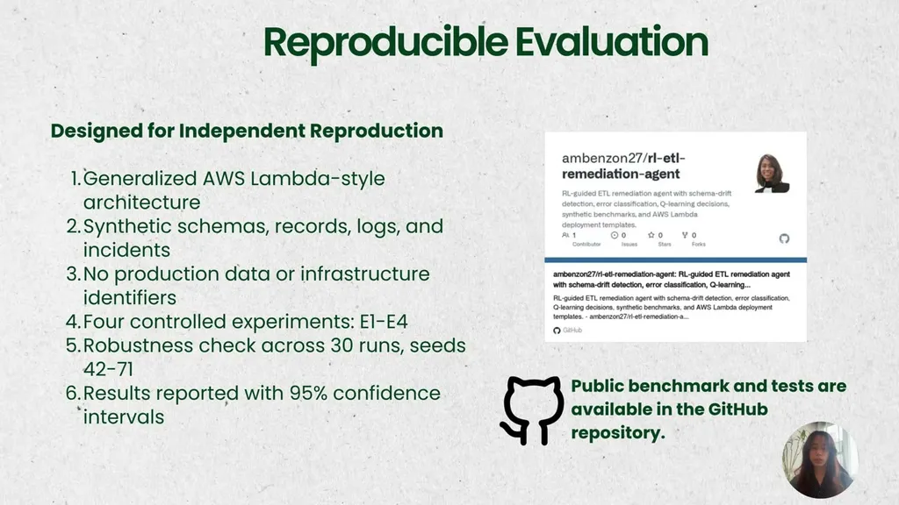
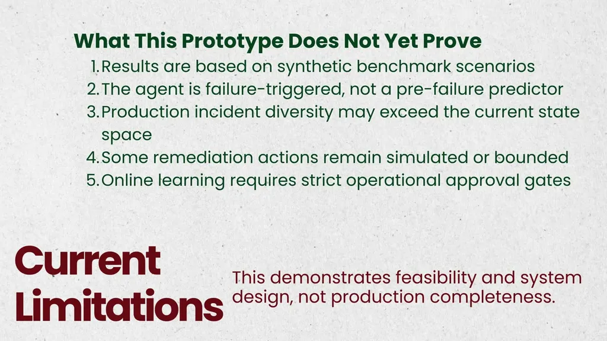

Using RL Agent to Detect and Remediate ETL Pipeline Failures
If you only read one thing
- The system separates deterministic fact detection (schema drift, data quality, error classification) from a small Q-learning policy that picks among six bounded actions, with a safety layer outside the learned policy that can override it and force escalation.
- On the benchmark, the RL-guided workflow's reliability came primarily from the deterministic detection logic and the external safety constraints, not from RL itself -- the RL policy matched but did not clearly beat an equivalent hand-defined deterministic policy (within 0.19 percentage points).
- Reported benchmark numbers: mean resolution time about 5.24 minutes vs. a roughly 2.5-working-day manual baseline (about a 99.85% reduction), simulated success rate 74.63%, non-escalation rate 88.63%, all from synthetic data across 36 to 71 runs with 95% confidence intervals.
The speaker frames the problem around a real engineer scenario: a production data job fails, and the expensive part isn't the failure itself but everything around it -- inspection, diagnosis, choosing a safe fix, running the job, and confirming no data error was introduced. The manual recovery baseline was modeled at roughly 2.5 working days, covering an incident moving through normal queueing, investigation, and approval.
“The failure itself may be small, but the expensive part is everything around it: inspection, diagnosis, choosing a safe,”
▶ watch at 00:00“roughly 2.5 working days. This represents an incident moving through normal queueing, investigation, and approval.”
▶ watch at 01:38
The system is built on AWS Glue/EventBridge/Lambda: a schema profiler, drift detector, data quality analyzer, error classifier, and risk scorer establish observable facts deterministically, while a Q-learning policy selects among six bounded actions (retry, rollback, quarantine, escalate, and others) based on a compact state of failure category, risk level, and data quality conditions. A safety layer sits outside the learned policy and can override its proposal -- for example, converting a passive action into an escalation when the anomaly is classified as critical.
“The policy receives the compact state Failure category Risk level Countability and data quality conditions These six actions”
▶ watch at 04:48“Notice that escalation is included in the action space that is not the agent giving up. It is the system correctly recognizing the boundary of its evidence and authority for an operational agent”
▶ watch at 06:25
Across a controlled benchmark run 36 to 71 times with 95% confidence intervals on synthetic data, the workflow's mean resolution time was about 5.24 minutes with a simulated success rate of 74.63% and non-escalation rate of 88.63%, versus a manual baseline of roughly 2.5 working days -- reported as approximately a 99.85% reduction. However, the RL policy's success rate was within 0.19 percentage points of an equivalent hand-defined deterministic policy on the same compact state space, and the safety override reduced nuisance escalations by about 15 points.
“The mean resolution time was about 5.24 minutes across the 30 runs. The simulated success rate was 74.63%”
▶ watch at 09:08“In the benchmark, that is approximately a 99.85% reduction in MTTR”
▶ watch at 09:40“The RL policy matches the equivalent deterministic policy. The difference of 0.19 percentage points (with a 0.19 point confidence interval) on this compact state space”
▶ watch at 10:11
The speaker's stated takeaways include using deterministic logic for facts that can be measured directly, using learning only for contextual action selection where it adds real value, and placing safety constraints outside the learned policy so a policy update can't silently redefine its own authority. The system is explicitly validated only on synthetic scenarios and is not yet tested in production.
“First, use the terministic logic for facts that can be measured directly. Second, use learning only. Contextual action selection is of real value”
▶ watch at 12:19
Commentary (ours)
The headline of a near-total reduction in resolution time is doing a lot of work here since it compares an automated minutes-scale response against a queueing-and-approval-bound manual baseline rather than against a human doing the same diagnostic work at full speed; the more interesting, better-supported finding is that the RL policy essentially tied a hand-built deterministic one, which argues for starting with rules and reserving learning for genuinely ambiguous action selection (ours).


Underlying detail — every claim, typed and timestamped (8)
| Stance | Claim | t |
|---|---|---|
| asserts | The expensive part of an ETL failure isn't the fix itself but the surrounding inspection, diagnosis, and safe-fix selection. | 00:00 |
| asserts | The manual recovery baseline covering queueing, investigation, and approval was modeled at roughly 2.5 working days. | 01:38 |
| asserts | The learned policy selects from a compact state and a small set of bounded actions including retry, rollback, quarantine, and escalate. | 04:48 |
| asserts | The system's mean resolution time was about 5.24 minutes across 30 runs, with a simulated success rate of 74.63%. | 09:08 |
| asserts | Compared to the manual baseline, the benchmark showed approximately a 99.85% reduction in mean time to resolution. | 09:40 |
| asserts | The RL policy's performance was within 0.19 percentage points of an equivalent hand-defined deterministic policy on the same compact state space. | 10:11 |
| asserts | Escalation is treated as a legitimate action reflecting the system correctly recognizing the boundary of its evidence and authority, not as the agent giving up. | 06:25 |
| recommends | The speaker recommends using deterministic logic for directly measurable facts and reserving learning for contextual action selection where it adds real value. | 12:19 |
Machine-readable copy embedded in this page (script#ontology) and in the corpus ontology.